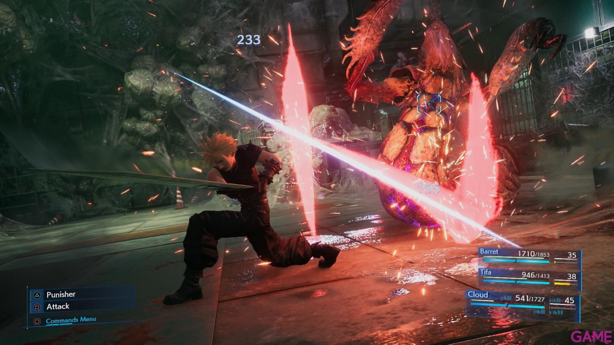
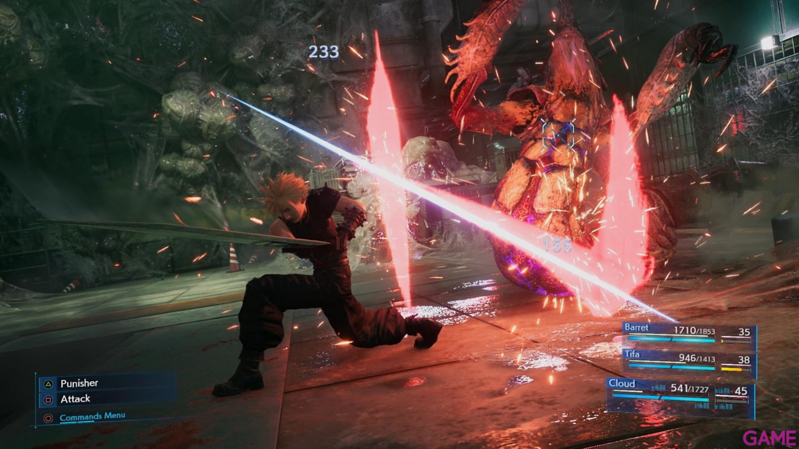

Final Fantasy VII es un videojuego de rol desarrollado por Square (ahora Square Enix) y lanzado por primera vez en 1997 para la consola PlayStation de Sony. Es la séptima entrega principal de la serie Final Fantasy y es ampliamente considerado como uno de los mejores videojuegos de todos los tiempos.
 
